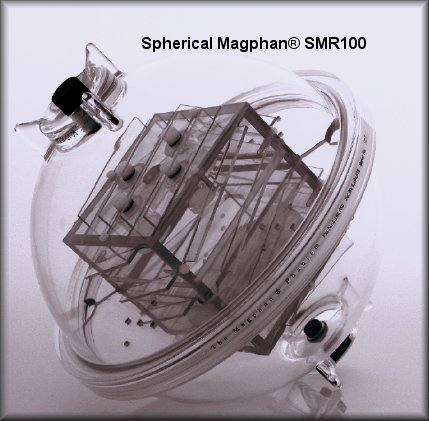
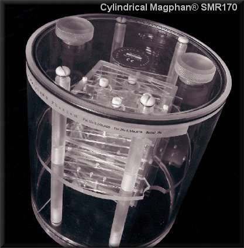
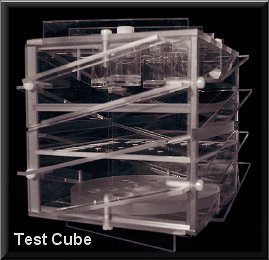

Magphan® MR Performance Phantoms
Magphan™ Cylindrical and Spherical Magphans™

Magphan™ Phantoms are designed to perform a wide range of precision performance evaluations of Magnetic Resonance Imaging (MRI) Scanners.
The design criteria for the Magphan™ phantoms are based on physicist,
Dr. David Goodenough's extensive experience with MRI system evaluation
and his well documented research into the quantification of image system performance tests.
The test objects that make up the current Magphan™
models embody two decades of scientific evaluation and field experience.

The Magphan's patented spherical design combines precise alignment of spherical geometry with cubic geometry.
As magnetic field characteristics
are mapped according to spherical harmonics,
natural magnetic fields extend to diagonally symmetric volumes (DSVs), or spheres.
This symmetry
is the reason the AAPM Task Group's Report number 6a, titled "Acceptance Testing of Magnetic
Resonance Imaging Systems," stated, "The sperical
shape is recommended for reasons of symmetry.
"Imaging performance is evaluated in the transaxial, coronal, sagittal and oblique planes by rotating
the sphere

The Magphan™ is also available with a conventional cylindrical housing for test groups and manufacturers who prefer the conventional cylindrical
shaped phantoms.
Spherical Magphan™ (SMR100) is a urethane sphere composed of two hemispherical shells with an inner diameter of 20cm.
The shells are connected with a simple threaded
flange connecting ring. The test cube assembly can be quickly removed without tools for greater
imaging flexibility and easy access for cleaning and maintenance.
Cylindrical Magphan™ (SMR170) has a removable end plate for internal access.
The acrylic cylinder has an outer diameter of 20cm and an inner diameter of 19cm.
Tests - Summary
- spatial uniformity
- signal-to-noise ratio (SNR)
- spherical geometry
- in-vitro sample testing
- geometric distortion (spatial linearity)
- pixel (matrix) size verification
- scan slice width and contiguity
- verification of patient alignment system
- spatial resolution up to 11 line pairs per cm (0.45mm resolution)
- low contrast sensitivity
- T1 and T2 measurements
- evaluation of 3-dimensional volume reconstruction
| Stock # | Description | Price |
|---|---|---|
| SMR100 | Magphan™ 100 including 20cm spherical housing, 10cm test cube and case | $8,044.00 |
| SMR140 | Magphan™ 140 - 10cm sphere with support disk | $1,576.00 |
| SMR170 | Magphan™ 170 including 20cm cylindrical housing, 10cm test cube and case | $8,354.00 |
| SMR172 | Magphan™ 172 including 20cm spherical housing, 20cm cylindrical housing, 10cm test cube and cases | $12,871.00 |